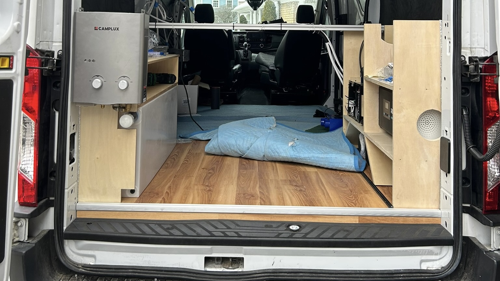
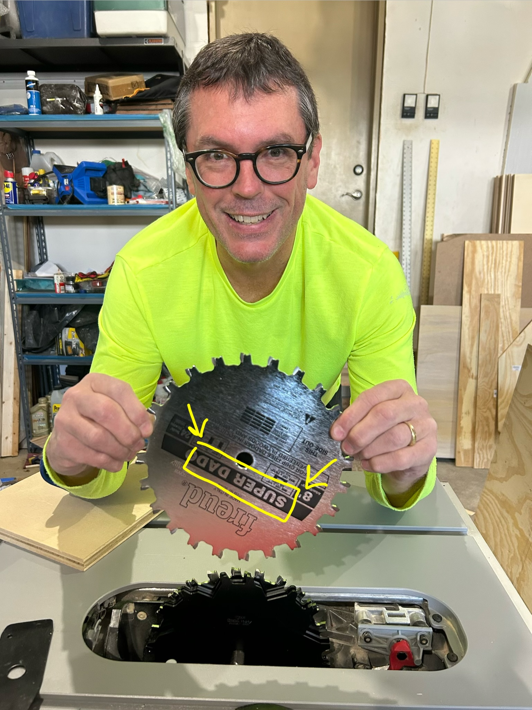
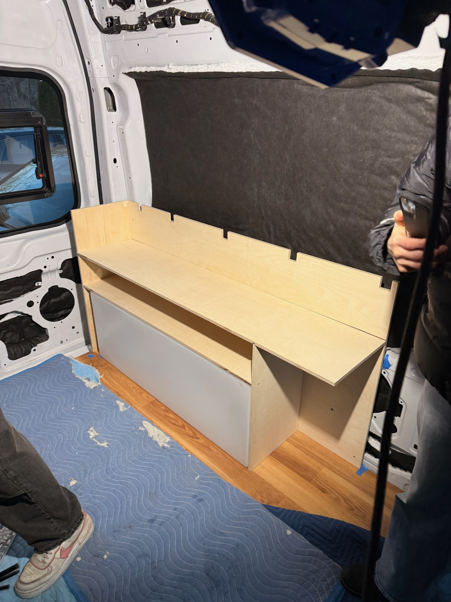
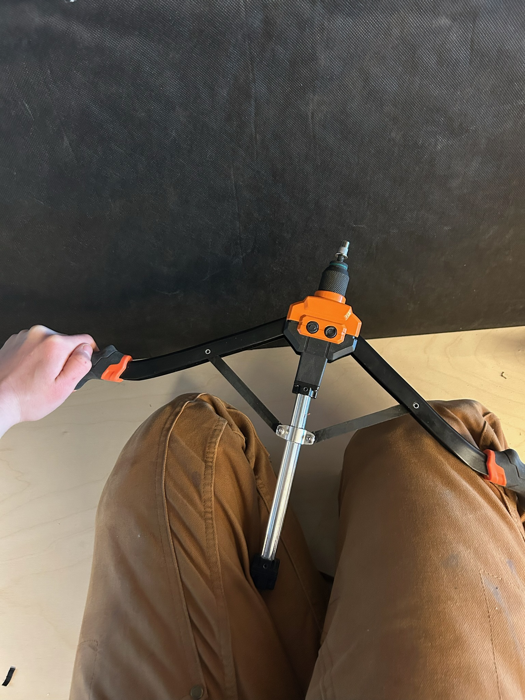
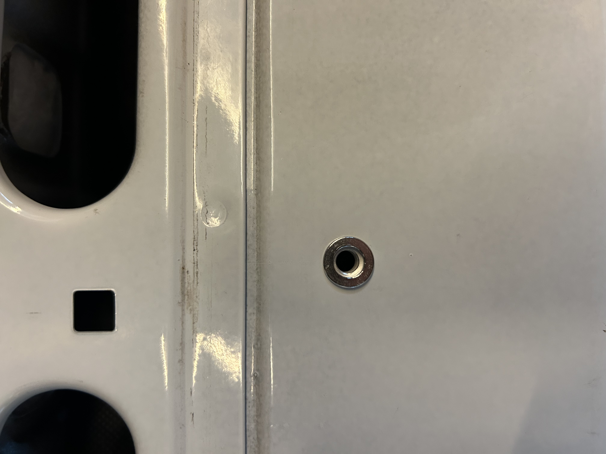
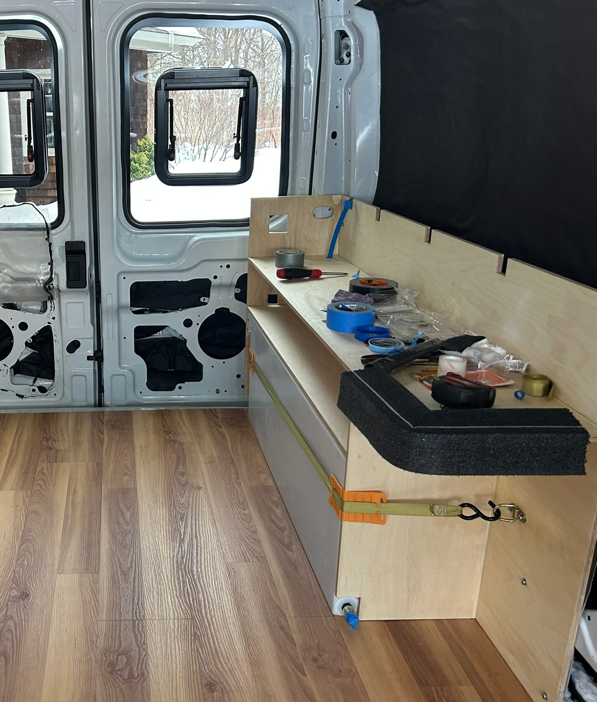
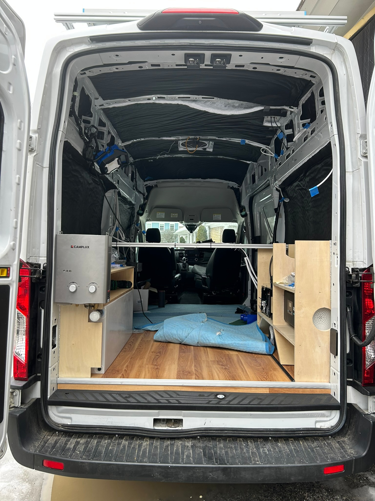
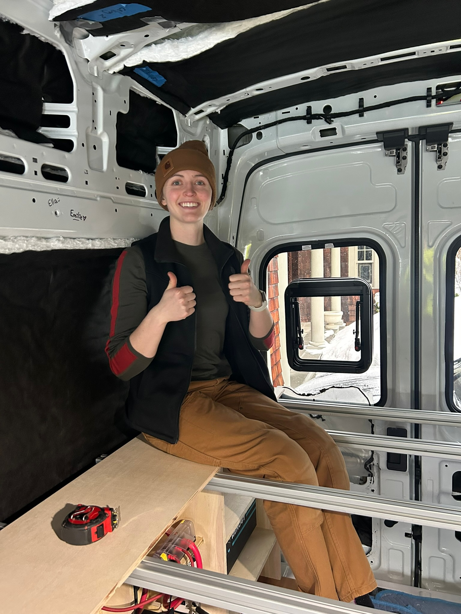
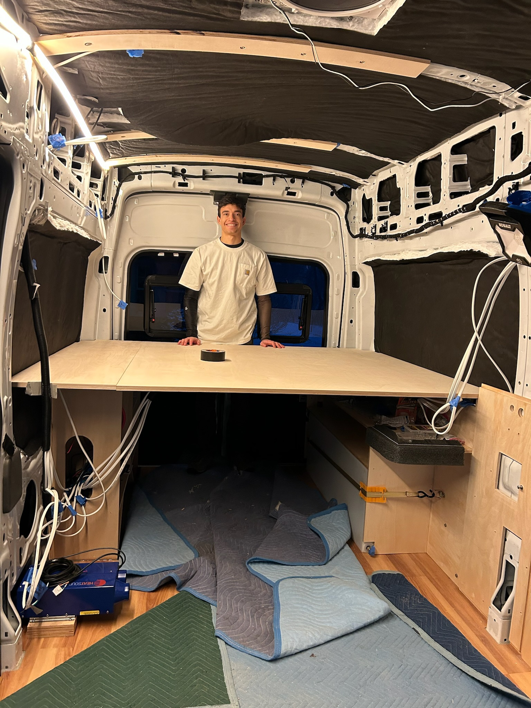

Bed bath & beyond
Water Tank Cabinet & Bed Frame

With the electrical cabinet well under way, it was time to get started on the other side of the “garage”! We needed this side to house a few different items. First, for storing our water. To maximize our space, we bought a 25 gallon tank designed to fit over the wheel well. We also bought a propane-powered hot water heater to have a little shower out of the back of the van. Lastly, we needed a place to store our skis! My skis fit under the bed no problem, but again, Zac’s were a bit too long. So, we decided to build a false drawer in the kitchen cabinet to create a long enough space. Stay tuned to see how that goes! The last requirement of both the water and electrical cabinets is to support the bed frame.
With the cabinet design in hand, we turned to the table saw to build it. My super dad was very happy to deploy his Super Dado blades. These blades are modular: more blades can be added to create channels of different widths. Setting the blade height then changes the channel depth. This is key because it allows us to carve channels into the cabinet faces to slot them together and achieve higher structural integrity. We dry fit these pieces and planned out all the holes we would cut in for water connections. First, the water tank requires connections for fill, vent, drain, and source (which will then run to our plumbing system). We also needed to run both a water and a propane connection back to the shower water heater. This process was harder than expected due to the many constraints in small spaces, but we landed on a nice solution that preserved most of our storage space. We also cut small slots along the top edge that will hold 80/20 aluminum rods crossing the van.


The next step of the cabinet-building process is glue and screw (half of the time, I end up saying grew and slue). This is always fun because you only have a limited time window to get everything together before your glue sets. And glue gets on everything. After a day of drying, I sanded the exposed edges and applied polyurethane to seal the wood, providing moisture protection and preventing the wood from warping or expanding too much.
Then, we were ready to install! For all of our cabinetry, we opted to, again, maximize space in our installation strategy. Instead of building furring strips all around the van (pieces of wood we could screw stuff into), we directly attached the cabinets to the metal walls of the van. It turns out that the van has tons of pre-drilled holes in the sheet metal for this purpose. We installed rivet nuts, which accept thread bolts, into these spots. This crossbow-shaped tool works by essentially crushing a back part of the metal nut against the van wall, locking the nut into the hole. The tricky part is that the riv nut locations then need to be transferred onto the back of the cabinet. Luckily, there is a handy tool called a transfer screw, which screws into the bolt on one end and has a spike on the other end. By pushing the cabinet against the transfer screws, we can see the indentations and mark out their exact locations. The last step is drilling the holes out and putting the cabinet in place!



After securing the cabinet with riv nuts and the water tank with a ratchet strap (we didn’t want 25 gallons flying around), we turned to the bed platform. It was pretty straightforward putting the 80/20 into place and Zac scribed the oddly shaped van walls onto some 3/4" plywood for the bed base. Importantly, it passed the sit test! This was the first component we installed that made the van feel like a living space.


